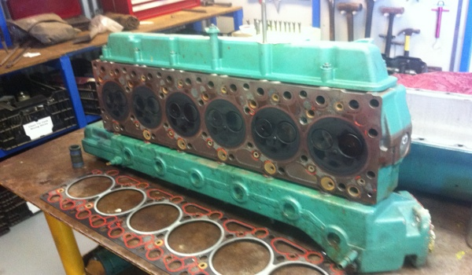
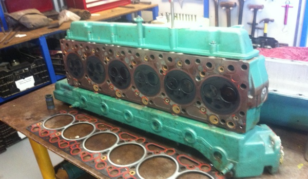
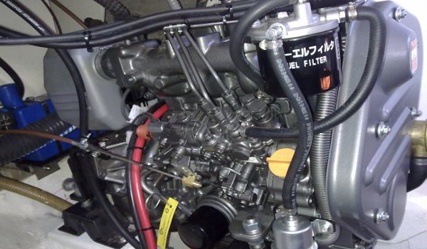
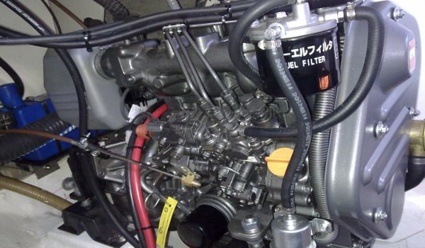

Your boat is your escape machine, for the weekends and holidays
Keep it 'good to go' with Diesel Marine Maintenance DMM
 

 



When you buy a boat, its a big investment. You expect it will serve you for years to come. So when you need your boat serviced or repaired, you want a company who will treat your boats needs with care and thoroughness, someone you can trust, and that company is Diesel Marine Maintenance DMM.
"We use quality parts and fluids and use preventative maintenance in our service schedules, which will keep your boat 'good to go' between services."
We have a range of suppliers of parts and accessorries and the best support companies for a good range of products to repair or enhance your boat or yacht, keeping it in great condition and increasing the longevity of your boat.
Diesel Marine Maintenance DMM has years of experience in boat repairs, and we are passionate about boats and seeing our customers right. We can help you have years of enjoyment with your boat and are happy to be part of your dream. Call us today to find out more about what we can do for you.
OUR SERVICES
- ZF transmissions
- Twin Disc transmissions
- WA Marine Transmissions
- Power Equipment
- Sea Power(Max O'Grady)
- Tasocs heat exchangers
- The Propellor Specialist
- THT Fiat and Iveco Marine
- All Marine Spares
- Volvo Penta Diesel and Drives
- Yanmar Diesel and industrial
- Nanni Diesel Marine
- Aqualine Shaft Bearings
- Maritex custom made shaft and rudder bearings
- PSS shaft seals
- The Propellor Specialist
- Gorri Props
- Austral Props
- SeaHawk props
We service and repair all makes of marine diesel engines. We don't just do diesel engine work, we service and repair all of you boats power and control systems.
- Steering
- Rudders
- Prop shaft and bearings
- Props
- Gearboxes
- Volvo IPS
- Sail drives
- Zeus Drives
- Hydraulics
- Low voltage electrical for engine and control systems
We are experienced with just about all marine diesel engines and have resources to call when you give us a curly one. Anything diesel.......we can do!
Often, our NEW customers are boat owners who are disappointed with other suppliers efforts in maintaining their 'dream machine'.
We are not the cheapest around, but we have a solid background in preventative maintenance which will keep your boat 'Good to Go' AND we back our customers up with the expected after sales service.
On servicing your boat we can offer you our thorough MAJOR service which covers all the boats power and control systems giving peace of mind, OR, for those boat owners that do a bit of their own boat work, and if you have a new boat, we can offer our MINOR service on the understanding that our involvement is limited and that you as the boat owner are going to check or repair other systems/faults present.
We also offer a CHECK OVER schedule. This is a check to make sure the boat is 'Good to Go' in between our Major or Minor services. For those of our boat owners who only come to Mandurah in the warmer months, this is a good thing. Your boat is dormant for a time, but still has requirements.....safety, performance and reliability!
We offer vessel inspection service as well. So if you are thinking about trading boats or getting into a boat, we can help with an inspection schedule that will ID any potential issues. A must, before you commit to so much money.
We like our customers to be safe at sea. So, we want our customers to be able to rectify common issues themselves.....with confidence! We can show you how to do the work to ensure that you can conquer common sea going faults. These would be sewater flow issues and fuel supply issues. We can also ensure that you have the right spare parts on board for those contingencies.
Oh, and through our tried and trusted supplier network, we can supply you with a wide range of products and services....things that we don't do 'In House'. Including high voltage elec, aircon and refrigeration, stainless steel and Ally fab work and steel boat hull repairs and modification. This type of work can be done while the boat is on our hardstand.
We are also authorised distributors of OEM spares for Volvo, Yanmar, Masse Gensets, Gorri Props and Onan Gensets. We use, recommend and can supply PSS Shaft Seals, Aqualine shaft bearings, Autostream props....an Aussy classic, Maratex performance customised prop shaft and rudder bearings, Austral Props....another Aussy classic and much more.
If you own a diesel powered boat in the Mandurah area and surrounds, we can help you!
DIESEL BOAT TIPS
A reminder of something that is not very well known about. Your Diesel engines Duty Cycle. Duty cycle can roughly be described as how much full RPM full load throttle that the engine manufacturers has allowed for in the design of their engine. Duty cycle is often given as a percentage. For example; a certain engine may have a Duty Cycle of 10%.
This means that 10% of the engines total life can be spent at full throttle full load or Full Noise, as we call it. This 10% cannot be done all at once! What this example does mean, is this; the engine can be operated at Full Noise for 6 minutes in any hour of engine operation. I suggest that 3 minute bursts in any hour as a better idea. You need to check the engine data literature that applies to your engine, to find out the correct percentage of Duty Cycle. Engine brands vary some.
Incorrect prop selection can cause devastating engine damage in a short time. The engine, gearbox and prop are matched to the boat. Boat surface speed is a by product of getting these things right. In general terms, a prop should give a Full Noise engine speed at about 200 RPM below full flight RPM which is full throttle No load. If the prop is too aggressive and will not allow the engine to reach correct full noise RPM, the engine will be overloaded at all speeds.
A prop that is not aggressive enough will allow the engine to overspeed. Both conditions will affect the engines longevity, performance and fuel economy. So those cheap props that you have had your eye on might cost you more than you think.
Lack of use is the biggest killer of marine engines and systems. It is reasonable to say, that what you save in fuel from not running your boat, is going to cost you X 10 in maintenance. It is not wise to think " if I don't use the boat, I won't need to service it " There is a couple of very good reasons why this won't work for marine engines.
- The exhaust system is full of seawater. When the engine metal is cold, the seawater tends to condensate on the metal inside of the engine. Water laden air drifts through to the exhaust manifold and in through any open exhaust valves.It ends up in the sump of the engine, passing through the oil where it picks up any sulphur introduced to the oil from the combustion process.We have Low Sulphur fuel now days but it is still made and gets into the oil. The sulphur, water and oxygen combine to make sulphuric acid. Not good for inside of the engine. So marine engine oil change intervals are shorter than for cars and trucks. Safe to say, that a sea going boat needs to have engine oil and filter changed every 150 engine hours, OR, every 12 months....whichever occurs first.
- Seawater that is trapped in the engines seawater cooling system tends to fall away or dry up when the engine is not run for a while. When the water leaves, salt and microbes remain.These tend to build up over a period of time with infrequent use and creates blockages and restrictions to seawater flow when the engine is running. Remember that when you shut the engine down, the metal is hot, so the water in the engine is going to flash off, leaving the salt etc in the system. So it can be seen that short stop start work for the engine is not ideal, with the long runs being the best.
What can you do? Just about every cubic metre of air on this planet contains millions of microbes and fungal spores. Some of these can live for hundreds of years before they get a chance to propagate. Every time you breath you take in more than a few. Every time your fuel tank breathes it takes in some. There is a lot of science in this subject, but to get to the facts for us boaters, I will make this short. Air also carries water. More water when by the sea, or in a humid environment.
This "bug" that gets into our fuel tanks gets in every time that we use our boats. As we use the fuel, the air coming in to replace the fuel taken out of the tank is replaced by air......and microbes, water and fungal spores.
The "bug" is a fungal character by the name of Cladosporium Resinae(Clad). Its a very versatile little microbe, Its mates can also expand on the "Clads" waste. Clad comes in with any incoming air to your fuel tank. It, with the moisture in this air, migrates to the bottom of the fuel tank and sets the scene for a slow and insidious demise of your boats fuel system.
This is how it works. Clad lives on the line between fuel and water. Water being heavier, its on the bottom. Clad feeds off the fuel, gets its oxygen in the water and excretes sulphuric acid and a web like mass that is very good at blocking fuel filter and pick up spear strainers. Fuel issues!
It can't be killed and exterminated by chemicals in this day and age.....but it can be contained. You need to use a biocide at the correct ratio on every fill or top up so that this little bugger can be controlled. See your local Chandlery.... see Andy at Hardware for Boats, Mandurah Ocean Marina.
Two (2) things will give you the best from your boat in regard to Clad and fuel:
- Always use a biocide in mix with your fuel....at the correct ratio.
- If you don't have one already, fit a Racor Primary Fuel Filter of the correct capacity, to your engine. These filters are the best mass produced marine fuel filters in the world.....No doubt.
These are the valves at the hull skin that can be turned off to prevent seawater ingress to inside off hull, should something go wrong with the equipment that the sea cock supplies water to. All engines and gensets should have a sea cock, as should all aircons, refridge units, black and grey water dump lines. The cocks are there for a reason. You need to make sure that these vital components are serviceable so that, if, and when, a failure occurs, you can easily close the cocks to stop the incoming water from wrecking your outing. Simple operate all seacock's at least 6 times a year. Best is if you close and open them all, on your pre and post use checks.
A sea scoop pushes seawater into an opening. Its a scoop, much the same as an air scoop on the bonnet of your favourite hotrod.With marine gensets scoops, if the boat is moving along, water is being forced into the genset seawater cooling system. If the engine to genset is not running there is NO exhaust gas pressure to force the seawater to leave the boat. As a result, some owners with boats come unstuck with a seawater flooded genset engine. Many dollars to repair!!
The problem starts with the gensets duty cycle. If its only used and operating when the boat is parked up....that's OK. the set doesn't need a scoop. If its used to keep fridges and freezers cold while travelling, than the set needs a scoop. The sets pump will not be able to supply enough cooling water while travelling to keep the set cool without the scoop. The problems can be big if the gensets accepts water through the seawater system that it cannot push out when the set is not running. So, if the set is not running the water feed cock should be turned OFF. Particularly if there is a scoop fitted to genset water uptake.
Same thing applies to any marine engine that is not running while the boat is moving. One can get away with abit through chance, but, when it comes to it, a worn seapump will allow water to pass and with no exhaust gas pressure to push the water out, the engine internals will flood. Experience has shown that nothing is surer.
As above for gensets with scoops, in a way. Our boats need the engines to be running to produce exhaust gas pressure so as to prevent seawater backfeed into the engines internals when water pressure up the exhaust passage exceeds, the exhaust gas pressure.
Whenever the engine is turning it will produce seawater to the exhaust system. If the engine is not turning by burning fuel being burnt, then there is a good chance that seawater will make its way back to the engine internals and create havoc.
So, if your boat is being towed in any direction with engines off....close the seacock's. If you are being towed backwards to get off a sandbar or similar, with engines off, turn off the seacock's and also pack some plastic garage bags up the exhaust outlet. Stop the water from back feeding!!! Exhaust flaps fitted will help, but they are not sufficient alone.
MANDURAH OCEAN MARINA BOAT YARD
The yard has a Marine Trimmer, Shipwright, Electronics supply/installer, a Petrol and sterndrive/outboard repairer and us, whose role is to service and repair diesel engines, reverse gear, shafts rudders and other systems. We don't do petrol or stern drives. We do operate on saildrives and IPS. The yard can be a one stop shop because any work not catered for by businesses within the yard, such as high voltage elec, aircon/refrigeration and stainless/ally fab work, can be easily sourced locally and done on site.
Mandurah Ocean Marina 'In Yard' Services:
Diesel Engines, transmissions, shafts, props and rudder service, repairs and installations
C: DaveP: (08) 9586 9425
M: 0488 048 969
E: dieselmarine@bigpond.com
Boat Building, timber and fibreglass repairs and modifications, hull inspections
C: HermanP: (08) 9586 9336
M: 0413 236 124
Marine Electronics, sales, service and installation
C: FrankP: (08) 9586 1000
M: 0416 133 032
Petrol Engines, sterndrive and outboard service, repairs and installations
C: Nick AmpsP: (08) 9582 7211
M: 0438 082 625
Marine Hardware, all boat hardware, also paints, lubricants and spare parts
C: AndrewP: (08) 9535 4098
M: 0438 082 625
Boat Lifting, Hardstand and Warf. Anti fouling, Prop Speed and anode replacement
C: Harry or GraemeP: (08) 9535 7911
M: 0418 946 948 (Harry)
M: 0417 984 280 (Graeme)
Trimming, clears, carpets and canopies. Repairs and new installations
C: GlenM: 0433 009 060
Jetty's and boardwalks, repairs and installations. Pile driving and barge hire
C: GraemeP: (08) 9581 5058
M: 0417 984 280
Lunch and Smoko. Good food, papers, drinks etc
P: (08) 9535 1878Diving Courses, tours, equipment and advice
C: FrankP: (08) 9586 1000
M: 0416 133 032
FIND US
Unit 8/187 Breakwater Parade
Mandurah Boat Yard
Mandurah WA 6210
P: (08) 9586 9425
M: 0488 048 969
E: dieselmarine@bigpond.com
Current Mandurah
Marine Weather
| Temperature: | |
| Wind: | |
| Swell: | |
| Pressure: | |
| Humidity: | |
BOM Marine Forecast